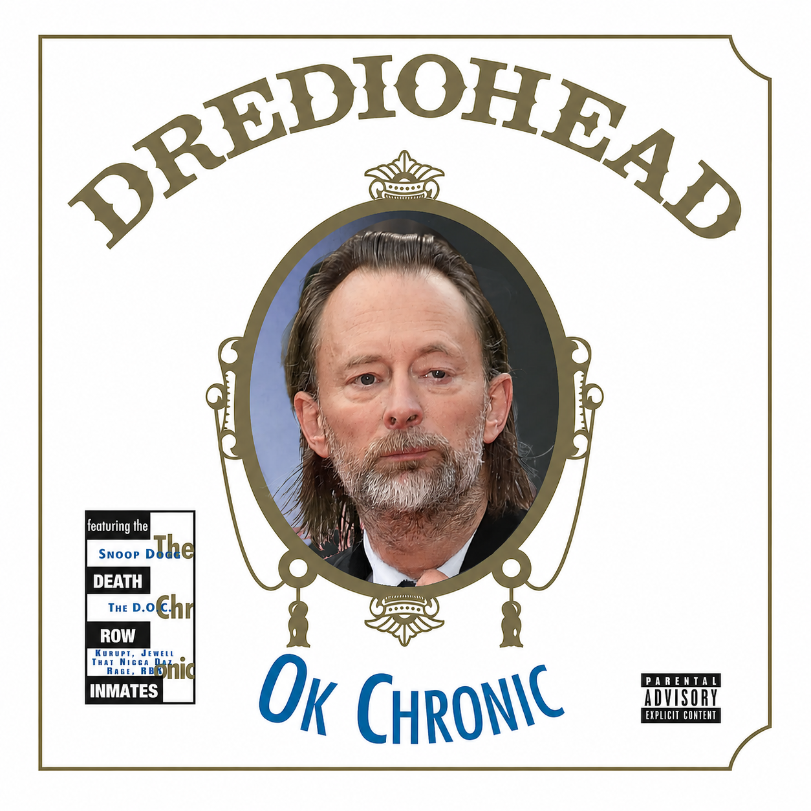

PRIVATE LISTENING LINK
DREdiohead
A private collection of works in progress. This player was created specifically for Ed O'Brien.
Ed - I hope you get here and can give this a listen someday. After hearing your recent interview on The Broken Record podcast talking about how much you were into Dr. Dre during the Kid A Recording, I couldn't believe what I was hearing as this project began a few weeks prior to the release of that interview. Was really just something fun to do for myself, but after hearing that, I really wanted you to hear this stuff. All of it was recorded live with a DDJ-FLX4 and stems of Radiohead and Dr. Dre produced songs...and typically the first attempt at mixing the 2 songs together is what is heard here. I have over 50 tracks, these are just the ones that "worked" out..mostly. Hit me up if you ever get to hear this and let me know what you think!
Cheers,
Don Jovi
1.716.418.4700
donjovi@gmail.com
donjovi@gmail.com